18 feature screenshots · 18 captured views · click any image for full size. All output is real (Python checks run against a mock iControl REST server built from the project's own fixtures).
07_version.png — version — build/version stamp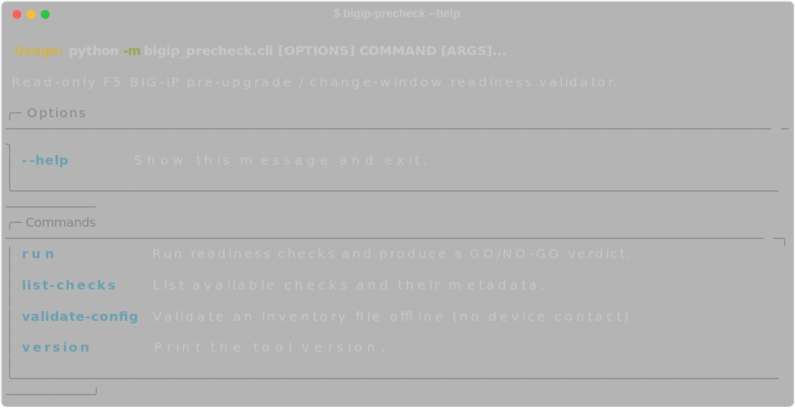
08_help.png — --help — command surface (run, list-checks, validate-config, version)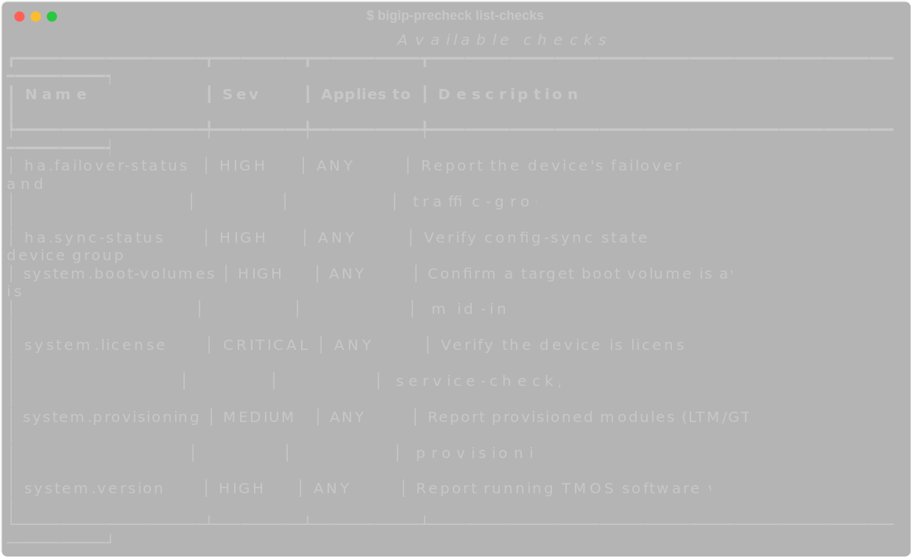
09_list_checks.png — list-checks — the 6 checkers, severity & role scope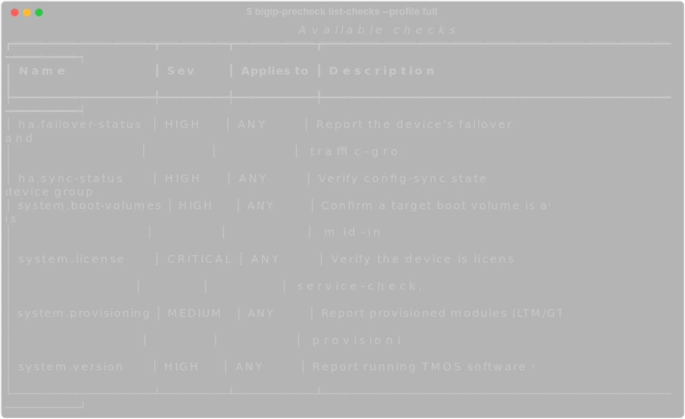
10_list_checks_profile.png — list-checks --profile full — profile-filtered view11a_validate_ok.png — validate-config — offline inventory validation (valid)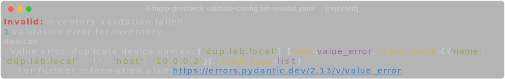
11b_validate_fail.png — validate-config — rejects duplicate device + unknown check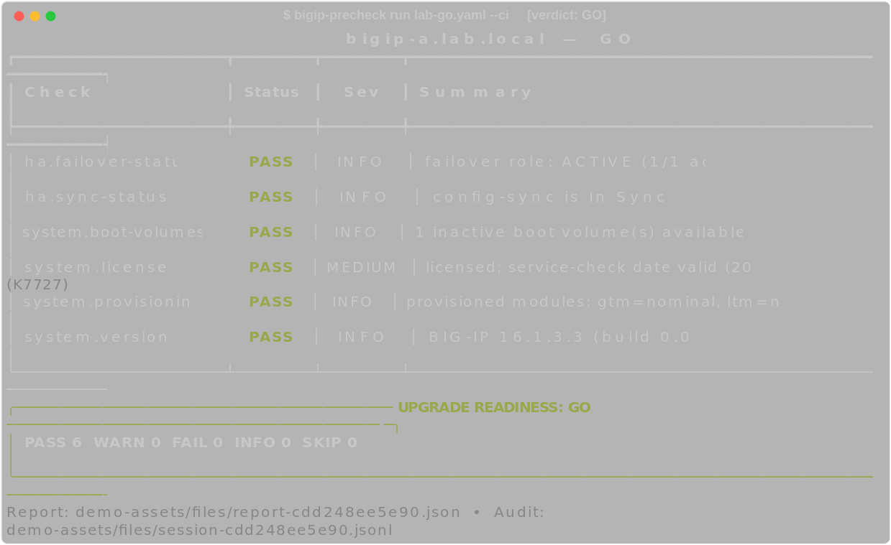
12_run_go.png — run --ci — healthy device → verdict GO (exit 0)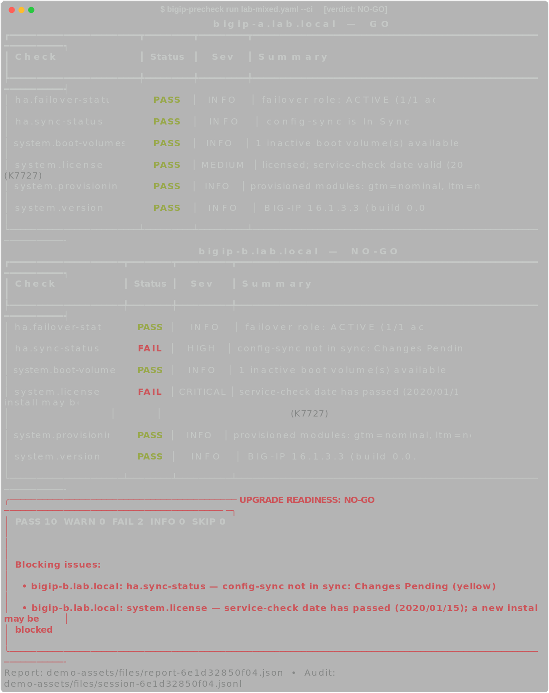
13_run_nogo.png — run --ci — expired license + config drift → NO-GO (exit 2), with blocking issues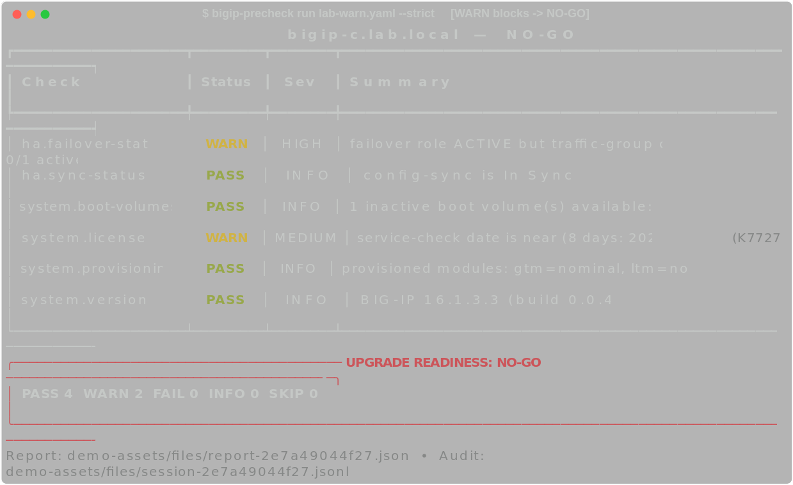
14_run_strict.png — run --strict — HIGH-severity WARN blocks → NO-GO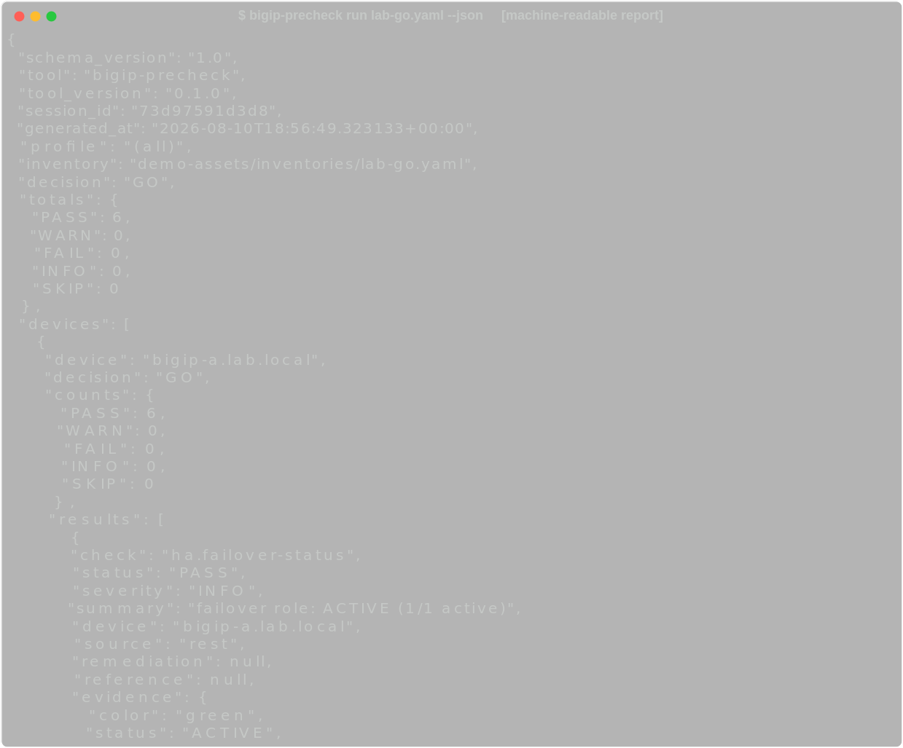
15_run_json.png — run --json — machine-readable report to stdout (CI/pipeline)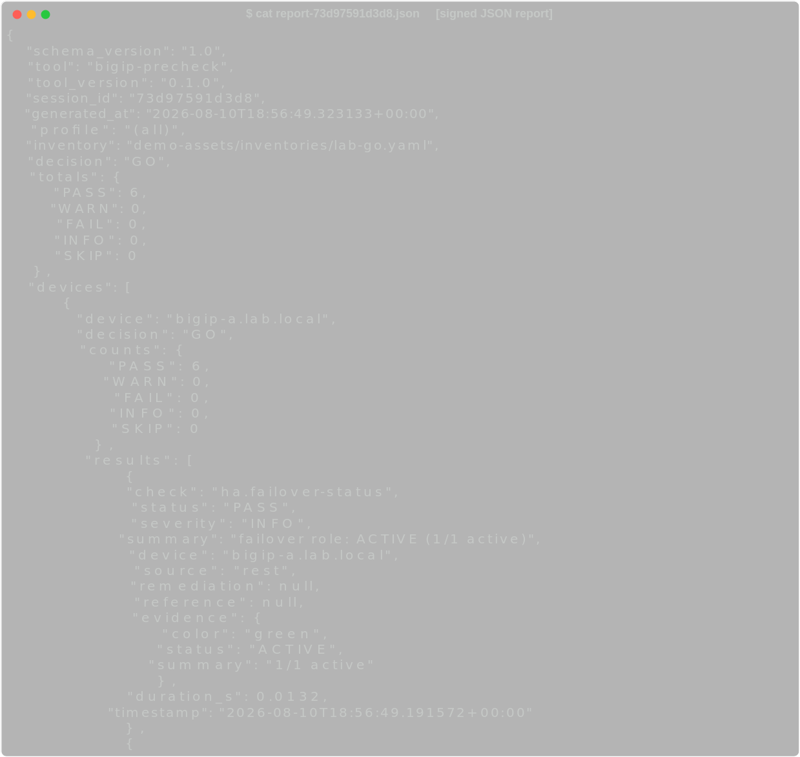
16_json_report.png — report-*.json — structured, SHA-256-sealed report artifact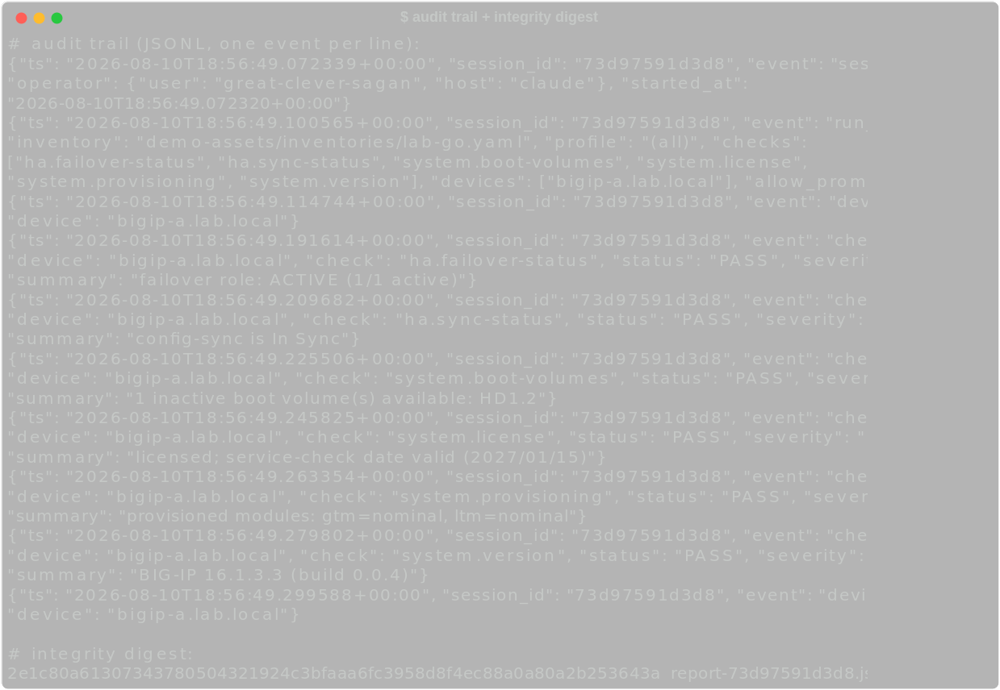
17_audit_integrity.png — audit trail (JSONL) + integrity digest — tamper-evident run record01_cm_list_checks.png — --list-checks — the 11 check modules05_cm_all_checks.png — all 11 modules execute (dry-run matrix)02_cm_dryrun_platform.png — --dry-run -e lab platform — orchestration, audit, no device contact03_cm_didyoumean.png — typo handling — 'did you mean…?' suggestion04_cm_validation.png — input validation — rejects a non-numeric thread count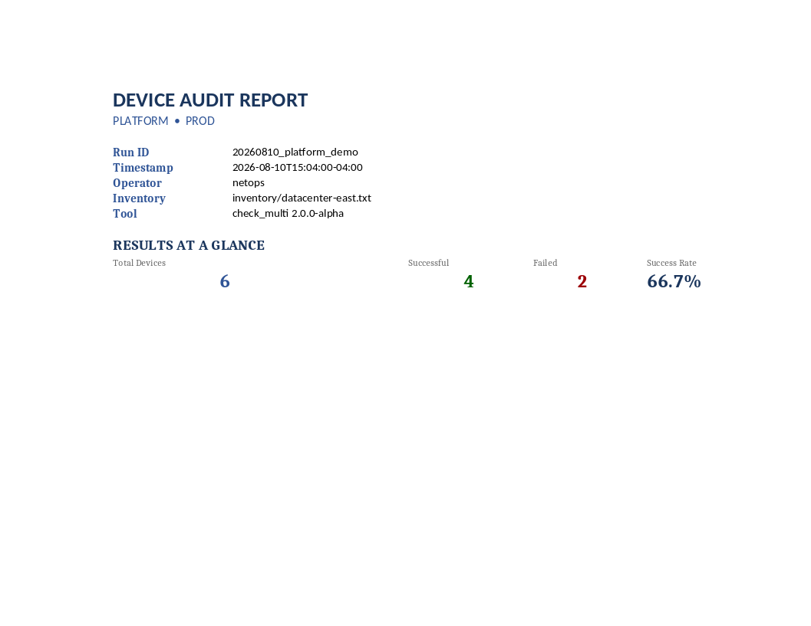
18_excel_report.png — generate_excel_report.py — per-device pass/fail executive summary (.xlsx delivered in files/)